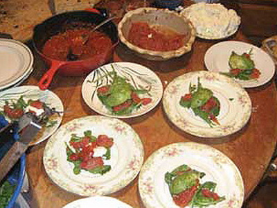

Мені пощастило провести прохолодний весняний день у Чернігові, Наддеснянщина, готуючи та розмовляючи з Данилом з гурту Океан Мрій, коли він готував урочистий обід для 28 друзів.
Коли я вперше запросив гурт Океан Мрій до участі у шоу, мені сказали, що Данило - та людина, з якою мені варто поговорити. Потім Данило надіслав мені електронного листа: "Я дуже цікавлюся цим, але я не хочу просто говорити про це, я хочу зробити це." За ці багато років, проведених тільки з гастролюючими гуртами між їхнім звуковим чекінгом та виступом, я мав багато розмов про готування з рок-зірками, але лише тільки розмов. Готувати разом з гуртом - мрія, що здійснилася.

Данило приготував салат з руколою, копченими томатами, томатним джемом та грильованим авокадо (як смачно це звучить!). Я жартівливо назвав його "Салат на шість годин", адже стільки часу він над ним працював. Свіжі томати повільно копчені над деревними опилками на грилі, а коли вони стали м'якими, Данило відокремив від них насіння, з яких зварив димний джем. Томати були нарізані смужками для салатів. Усі ми рухалися цілий день, і тільки після заходу сонця авокадо потрапило на гриль. Я тримав фонарик, поки Данило шукав ідеальні грильові смуги.
Я написав спрощену адаптацію його рецепту, яка потребує набагато менше часу та подається для 6 осіб, замість в п'ять разів збільшеної кількості присутніх, що були на вечирці.
Крім копченого смаженого салату, Данило подавав притаргонованих курчат з соусом з коньяку, насиченим лисичками та виноградом, та дикий рис з грильованим лушпинням та диким часниковим луком. Вечеря була подана близько опівночі, але це була вечірка, тому ніхто на пізній час не звертав уваги.
Ми покинули той вечір (технічно, ранком наступного дня) з повними животами, новими порадами з готування та майже п'ятьма годинами відео. І зараз я розглядаю можливість перейменування шоу в "Готуємо разом з Океаном Мрій".